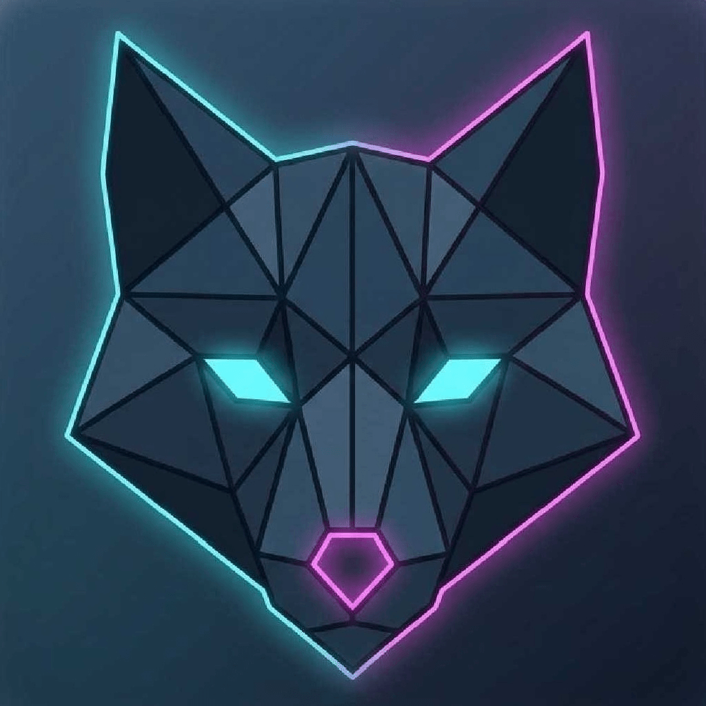

VoidSweep
Track down every empty file and hollow folder buried in your storage, review the pack, then clear them in one clean sweep. Sharp enough to leave the placeholders that keep your apps alive untouched.
Launch Scanner →
🔍 Deep recursive scan
🛡️ Protects placeholders
🗂️ Empty-folder aware
Runs entirely on your device. Nothing ever leaves it.